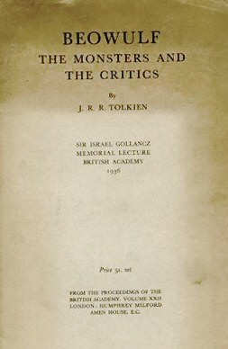
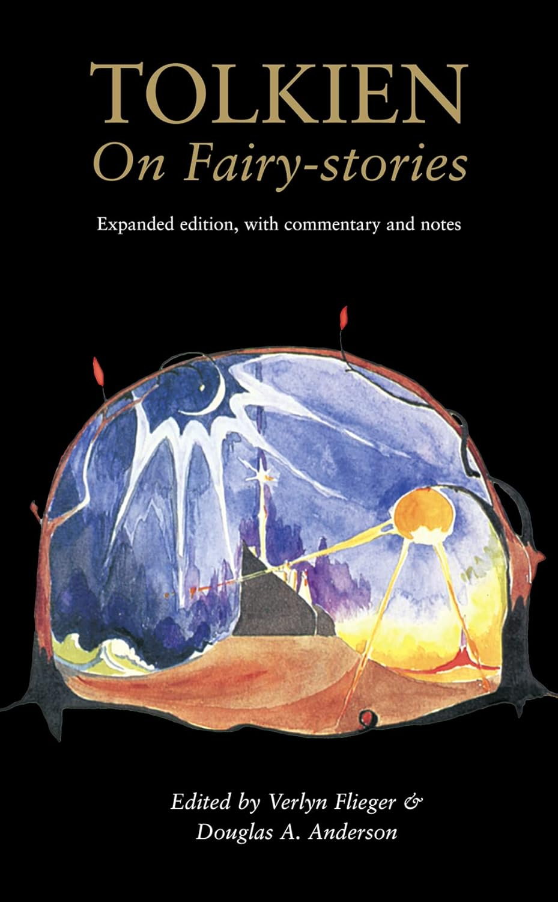

|  |
Beowolf: The Monsters and the Critics
In addition to writing fiction, Tolkien was an author of academic literary criticism.
His seminal 1936 lecture, later published as an article, revolutionized the treatment
of the Anglo-Saxon epic Beowulf by literary critics. The essay remains highly
influential in the study of Old English literature to this day. Beowulf is one of
the most significant influences upon Tolkien's later fiction, with major details of
both The Hobbit and The Lord of the Rings being adapted from the poem.
|
|  |
This essay discusses the fairy-story as a literary form. It was initially written
as the 1939 Andrew Lang Lecture at the University of St Andrews, Scotland. Tolkien
focuses on Andrew Lang's work as a folklorist and collector of fairy tales.
He disagreed with Lang's broad inclusion, in his Fairy Book collections, of
traveller's tales, beast fables, and other types of stories. Tolkien held a
narrower perspective, viewing fairy stories as those that took place in Faerie,
an enchanted realm, with or without fairies as characters. He viewed them as the
natural development of the interaction of human imagination and human language.
|